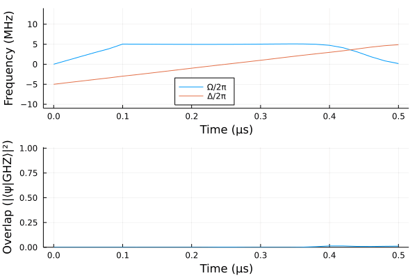

Sisyphus
Sisyphus.jl is a flexible high-performance Julia package for gradient based quantum optimal control. It is well integrated into the Julia ecosystem by supporting definitions of quantum objects from the QuantumOptics.jl library, automatic differentiation through Flux.jl, it relies on OrdinaryDiffEq.jl to simulate the dynamics of quantum systems and can be used in conjunction with any optimizer in the Flux or NLopt[1] packages. The solver is implemented with the CommonSolve API. The simulation backend is multi-threaded (uses MKLSparse library) and autoscales on multicore CPUs depending on the problem size. It can also be seamlessly run on a GPU and it is suitable for solving large scale quantum optimal control problems.
Examples
optimization of a two level state transfer problem 
optimization of GHZ state preparation in a linear chain of 12 atoms on a GPU 
- 1including derivative free optimization algorithms